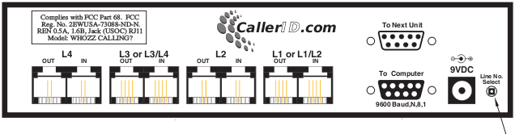
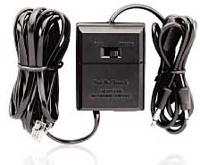
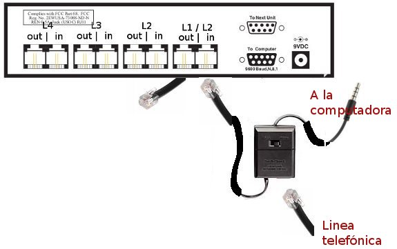
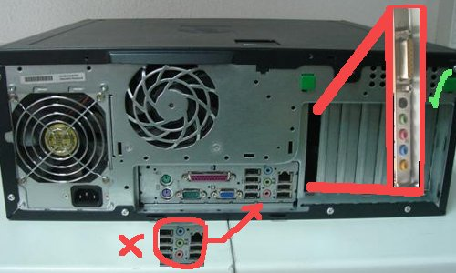
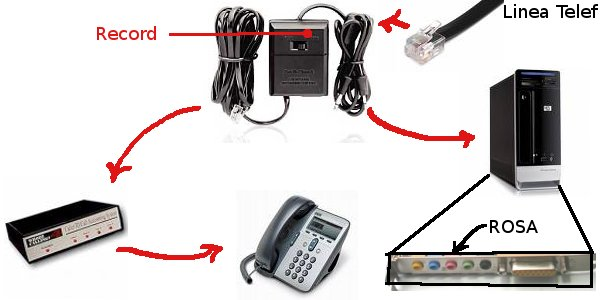

Configuración de whozz calling.
El whozz calling realiza la identificación de números telefónicos, al momento de recibir una llamada telefónica, te permitirá ver el numero telefonico e identificar rapidamente al cliente en las terminales para realizar el pedido del producto.
En la siguiente fotografía se muestra
la parte trasera del whozz calling, en esta sección van conectadas todas tus lineas telefónicas que te son instalas por telmex.

El grabador lleva un switch, el cual debe de estar en record, este debe de ir conectado a la parte trasera del whozz calling en la entrada IN de la linea telefónica.

la conexión del grabador debe de ser similar a la de la siguiente figura.

El grabador, tiene dos salidas de audio, una de ellas embona perfectamente, esta debe de ir en la entrada rosa de la tarjeta de expansión de audio que se ubica en la parte trasera de la computadora

A continuación se muestra una conexión general del grabador con el whozz calling y el CPU
